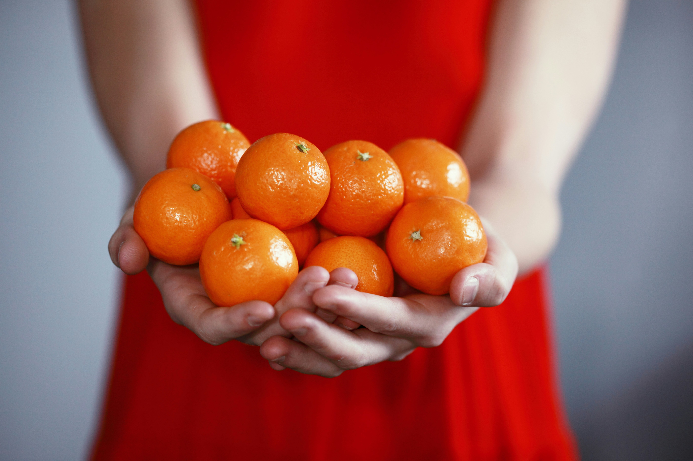

Nutrition Guide
Meal Planning
Meal planning helps you maintain a balanced diet and make healthier choices. Here are some tips:
- Plan your meals for the week ahead.
- Include a variety of food groups: proteins, carbohydrates, and fats.
- Prepare meals in advance and store them in portion-sized containers.
- Make a shopping list to avoid impulse buying.

Healthy Eating Habits
Adopting healthy eating habits can lead to long-term wellness:
- Eat at regular intervals to keep your metabolism active.
- Stay hydrated by drinking plenty of water.
- Limit processed foods and sugar intake.
- Practice mindful eating; pay attention to your hunger cues.

Healthy Recipes
Try these healthy recipes for nutritious meals:
- Quinoa Salad: A refreshing mix of quinoa, cucumbers, tomatoes, and feta cheese.
- Grilled Chicken: Marinated chicken breast grilled to perfection, served with steamed vegetables.
- Overnight Oats: Rolled oats soaked in almond milk, topped with fruits and nuts.
- Veggie Stir-fry: A colorful mix of bell peppers, broccoli, and carrots stir-fried with tofu.

Nutrition Tips
Here are some additional tips to boost your nutrition:
- Incorporate more fruits and vegetables into your diet.
- Choose whole grains over refined grains.
- Include healthy fats, such as avocados and nuts.
- Limit sodium intake by cooking at home.
Healthy Snack Ideas
Snack smartly with these healthy options:
- Greek yogurt with honey and berries.
- Hummus with carrot and cucumber sticks.
- Apple slices with almond butter.
- Homemade trail mix with nuts and dried fruits.


Stay Hydrated

Eat Colorfully

Choose Whole Foods